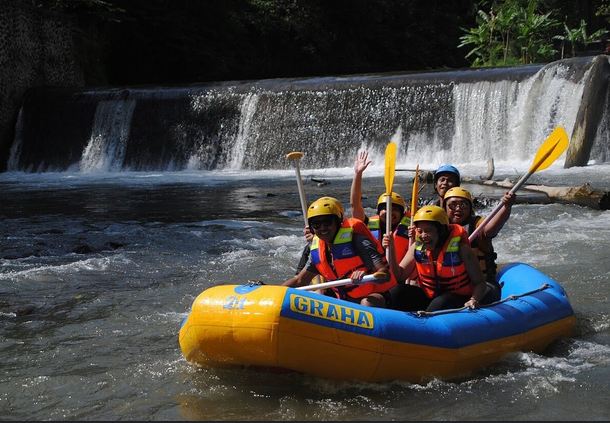
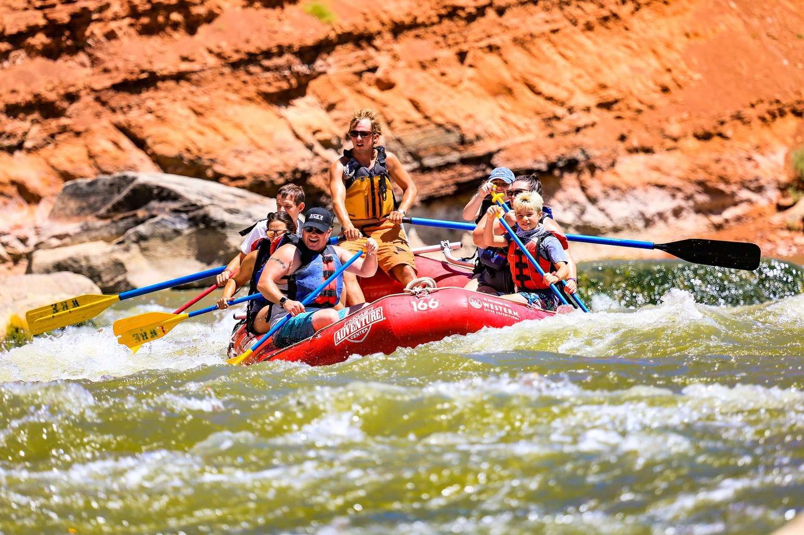
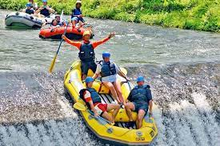
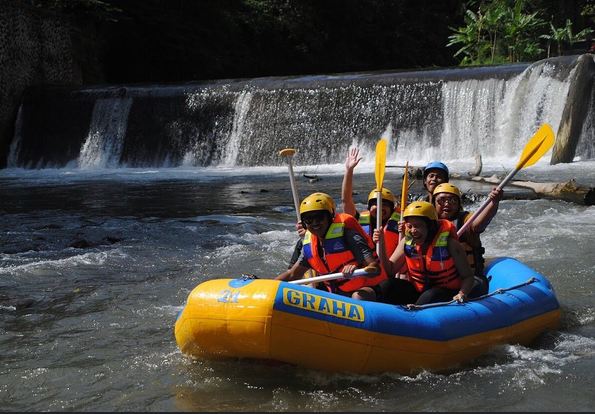
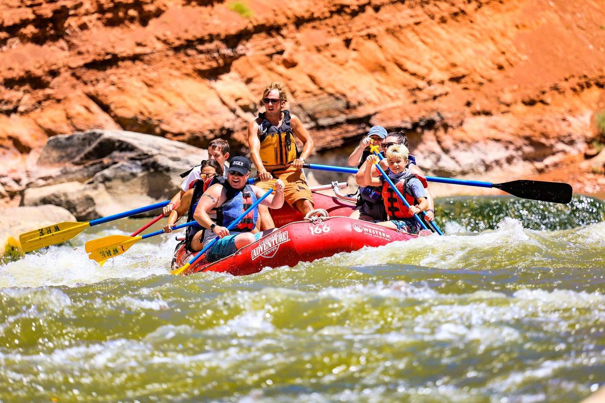
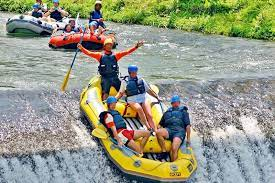

White Water Adventures
History
White water rafting began in the early 1800's, 1811. This was when it was recorded a crews trip on the Snake River. After that trip it was agreed that they were not prepared to navigate through the river and the Snake River then after was referred to as "The Mad River." Our family members were on that trip, and thus began are company history.
Adventure Awaits You!
 




